วันนี้เราจะเดินทางอย่างไร?
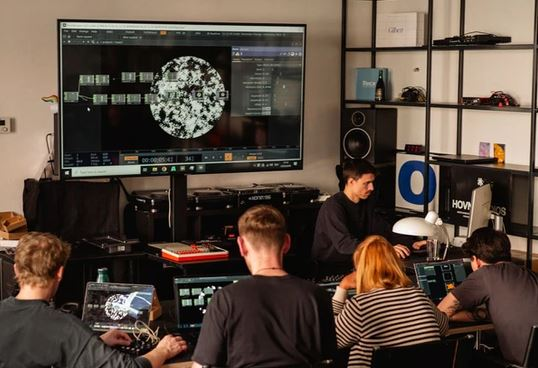
Lecture
ภาพรวม ระบบ อุปกรณ์ และตัวอย่าง

Live Demo
TouchDesigner
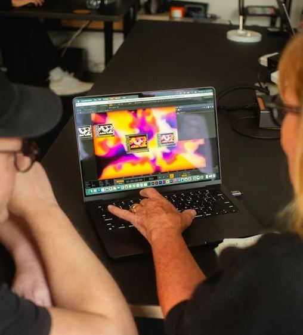
Studio Workshop
ลองทำด้วยตัวเองดูหน่อย

Show & Talk
นำเสนอ แลกเปลี่ยน และสรุป
Immersive ≠ แค่ภาพใหญ่
คำว่า Immersive ไม่มีนิยามเดียว แต่สามารถมองได้หลายมิติ — ลองคลิกแต่ละการ์ดเพื่อเปิดคำถามชวนคุย
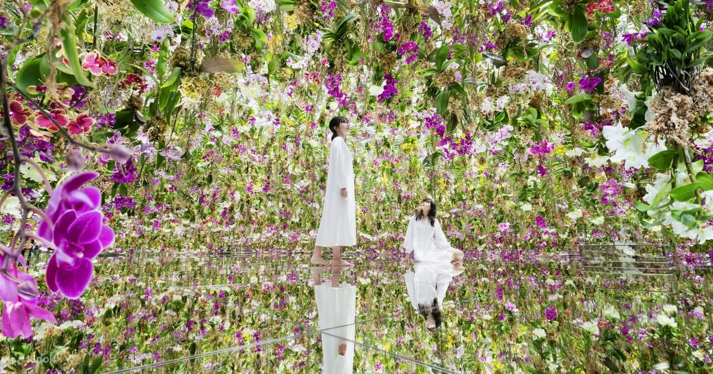
👀Sensory
สื่อกระตุ้นประสาทสัมผัสหลายด้าน เช่น ภาพ เสียง แสง การสั่น หรือกลิ่น จนความสนใจถูกดึงเข้าไปในงาน
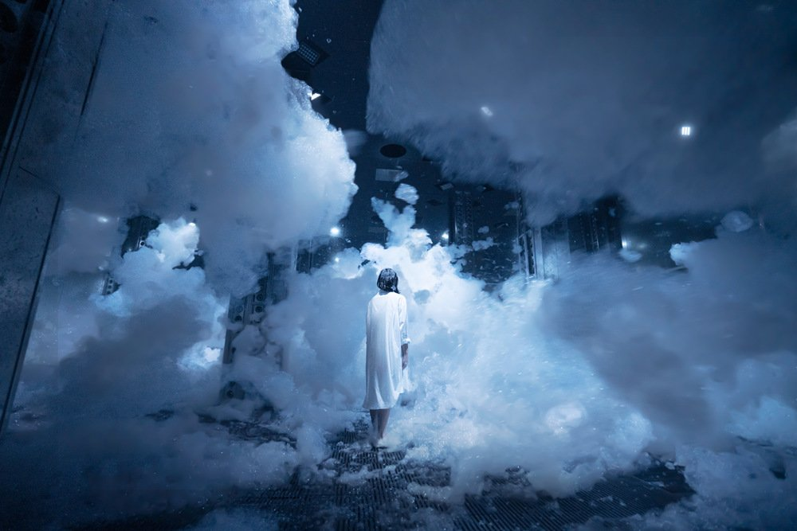
🧭Spatial
พื้นที่รอบตัวกลายเป็นส่วนหนึ่งของสื่อ ผู้ชมไม่ได้มองเพียงกรอบจอ แต่รับรู้ภาพผ่านสเกล ระยะ และตำแหน่ง
 🫳
🫳Interactive
ระบบรับรู้การกระทำของผู้ชมและตอบกลับ ทำให้คนดูรู้สึกว่าตนเองมีผลต่อสิ่งที่เกิดขึ้น
 🧠
🧠Psychological Presence
ผู้ชมรู้สึกว่า “อยู่ในเหตุการณ์” จนลืมพื้นที่จริงชั่วขณะ แม้งานอาจไม่ได้ล้อมรอบทั้งหมด
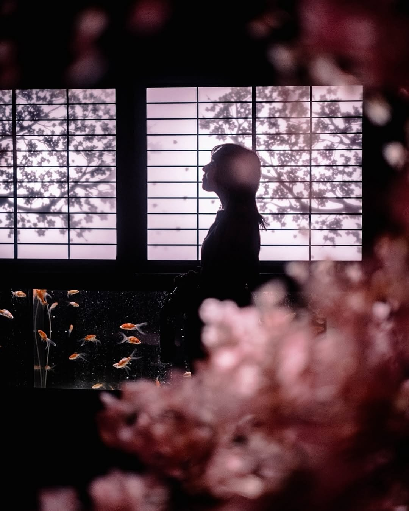
✨Narrative & Emotion
เรื่องเล่า บรรยากาศ และอารมณ์ทำให้ผู้ชมเชื่อมโยงกับโลกของงาน ไม่ใช่เพียงเห็นเทคโนโลยีที่น่าตื่นตา
คำถามเปิดคลาส
ในมุมมองของคุณ “Immersive” คืออะไร? เลือกมา 1–2 มิติที่สำคัญที่สุด และยกตัวอย่างงานหรือประสบการณ์ที่เคยเจอ
Art Aquarium Museum GINZA
สิ่งมีชีวิตจริงในโลกศิลปะ
พื้นที่จัดแสดงนำปลาทองจริงมาเล่าเรื่องใหม่ผ่านตู้ปลารูปทรงต่าง ๆ แสง ดนตรี กลิ่น และการจัดวางที่ได้รับอิทธิพลจากวัฒนธรรมญี่ปุ่น ทำให้ผู้ชมไม่ได้เพียง “ดูปลา” แต่เดินผ่านโลกที่มีบรรยากาศเฉพาะตัว
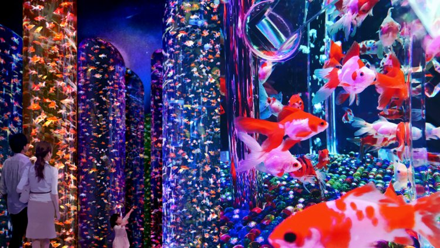

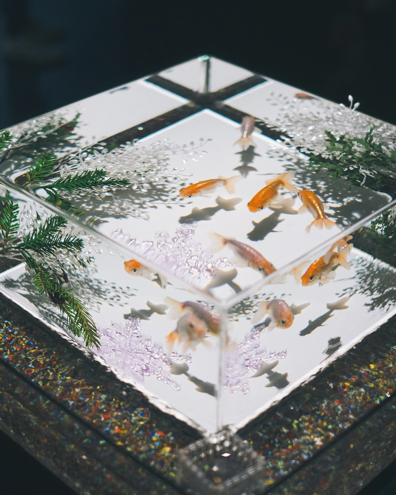
teamLab SuperNature Macao
ร่างกายเข้าไปเป็นส่วนหนึ่งของงาน
teamLab อธิบายพื้นที่นี้ว่าเป็นงานแบบ “body immersive” ซึ่งศิลปะไม่ได้เล่นเป็นวิดีโอที่บันทึกไว้ล่วงหน้า แต่ถูกสร้างขึ้นแบบเรียลไทม์ และเปลี่ยนไปจากการเคลื่อนไหวหรือการมีอยู่ของผู้ชม ทำให้เหตุการณ์เดิมไม่สามารถเกิดซ้ำในรูปแบบเดิมได้
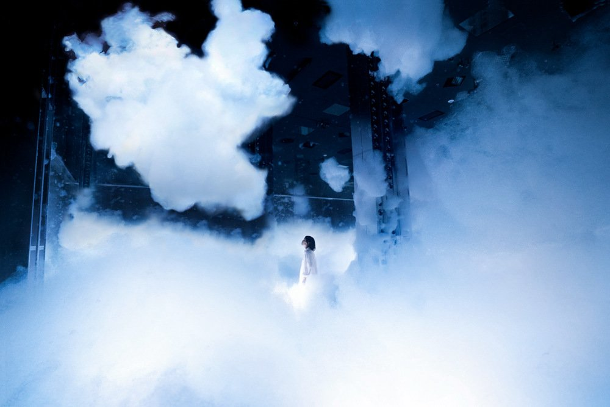

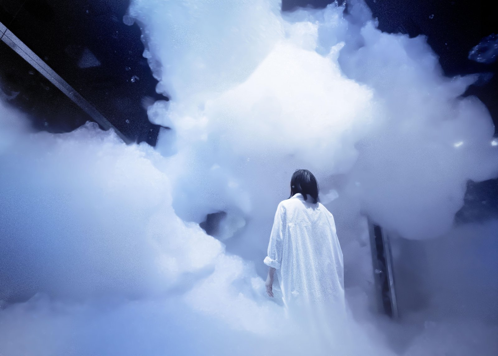
teamLab SuperNature
ธรรมชาติจริงและดิจิทัลหลอมรวมกัน
โซนดอกไม้และพืชจริงที่ห้อยลงมาล้อมตัวผู้ชม แสดงให้เห็นว่าคำว่า immersive ไม่ได้อยู่ที่จอหรือโปรเจคเตอร์เท่านั้น แต่รวมถึงการจัดองค์ประกอบของ “ธรรมชาติจริง” ให้ผู้ชมรู้สึกเข้าไปอยู่ภายในงานโดยตรง

รู้จัก “Sensor” รอบตัวเรากันหน่อย
 1
1
 2
2
 3
3
 4
4
 5
5
 6
6
 7
7
 8
8
 9
9
 10
10
ลองทายก่อนว่าอุปกรณ์แต่ละชิ้นใช้เซนเซอร์อะไรทำงาน — คลิกที่การ์ด เพื่อพลิกดูเฉลย
เลือกซอฟต์แวร์ให้ตรง “หน้าที่”
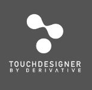
TouchDesignerสร้างภาพขึ้นสด ๆ จากโหนดหรือโค้ด และข้อมูลจากเซนเซอร์ — ภาพเปลี่ยนตามผู้ชมได้
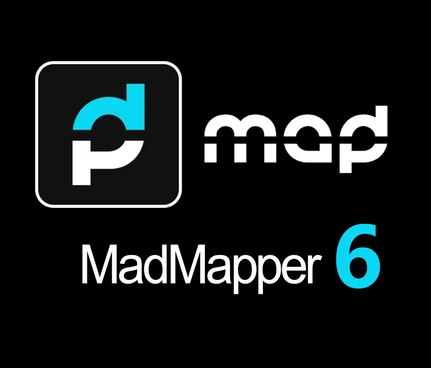
MadMapper Resolume Arena
Resolume Arena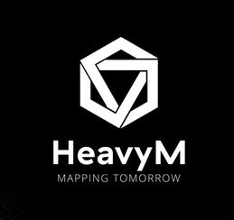
HeavyMดัดภาพให้เกาะรูปทรงของสถานที่ ตัดขอบ ผสมรอยต่อ แล้วส่งออกหลายเครื่องพร้อมกัน
Resolume Arena Smode
Smode Watchout
Watchoutเล่นสื่อเป็นเลเยอร์ ไทม์ไลน์ สั่งคิว คุมหลายจอหลายเครื่องพร้อมกันระหว่างการแสดง
เลือกซอฟต์แวร์จาก “ฟีเจอร์” ที่ต้องการใช้งาน